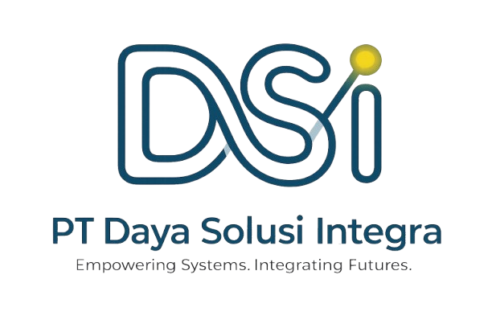

Pratinjau visual logo asli Daya Solusi Integra terhadap latar belakang gelap website (Ink Navy) dengan berbagai teknik desain.

Warna biru tua/teal asli logo langsung tenggelam di atas latar belakang gelap, membuat bentuknya sulit dikenali oleh pengguna.
Mengubah seluruh elemen gelap menjadi putih perak murni. Sangat kontras, modern, bersih, dan menyatu sempurna dengan dark mode.
Membungkus logo asli dalam wadah putih susu. Warna asli logo tetap terjaga 100%, tetapi menciptakan blok kotak/kapsul kontras di header.
Menggunakan wadah semi-transparan dengan efek blur kaca. Memberikan kontras sedang, mempertahankan warna asli logo, dan terlihat futuristik.
Logo asli diberikan bayangan pendar cahaya putih tipis di sekelilingnya agar memisahkan bagian gelap logo dari latar belakang.
Silakan buka file ini langsung di browser Anda untuk membandingkan tampilannya secara real-time.
File Path: file:///C:/backup/Daya-Solusi-Integra/logo-demo.html